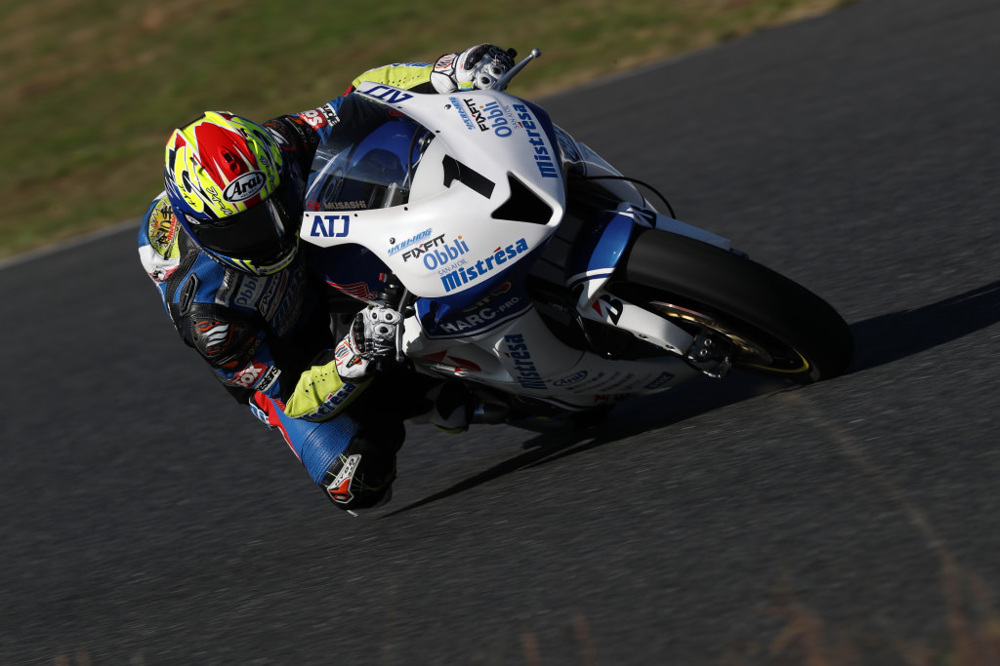

Photography Basic | Part 7
The Viewfinder
When it comes to shooting, a vital part of the camera is the viewfinder. Nowadays, there are cameras that do not come with viewfinders, only with Live View shooting. However, as you get more experienced with photography, you will realise how much shooting with a viewfinder can affect your photos. In this article, we take a closer look at the viewfinder.
The optical viewfinder allows you to concentrate on your subject
Points-to-note
-Prevents external light from interfering with your shoot.
-Allows you to concentrate on the subject without distraction.
-Easy to keep track of moving subjects.
The viewfinder is a small window on the camera which look through in order to compose your photo and establish focus on a subject. The difference between Live View shooting, where you use an LCD monitor, and viewfinder shooting is that in the latter, external light is prevented from affecting how you perceive the display on the screen. This allows you to put full attention on the subject right before your eyes, which in turn makes it easier to track moving subjects. A digital camera is equipped with either one of two types of viewfinders: the optical viewfinder (OVF) and the electronic viewfinder (EVF).
The optical viewfinder (OVF) is mainly found on DSLR cameras such as the EOS 77D and EOS 1300D. On such cameras, light passing through the lens is reflected off a mirror and into the viewfinder, which enables you to shoot while viewing the actual image. The advantage of this is that you can track moving objects more easily, and also have a more accurate view of colours. On the other hand, since the mirror is necessary for reflecting light, there is a limit on how compact the camera can be made. Preview of the effects of white balance and exposure compensation is also not available.
Meanwhile, the electronic viewfinder (EVF) is usually found on mirrorless cameras such as the EOS M5. It electronically projects the image captured by the image sensor onto a small LCD panel, and this is what you are really looking at when you look through the EVF. Since there is no need for a mirror in this case, cameras can be made much more compact. You can enlarge the view on the focus area and check the effects of adjusting colour and brightness before shooting. However, since an EVF consumes relatively more power, it may expend slightly more battery life.
Optical viewfinder
Mostly featured on DSLR cameras

EOS 77D
Advantages
-Able to view the subject in real time
-It is easy to track moving subjects
-Accurately detects colours of the subject
Disadvantages
-A limit to how compact the camera can be
-Unable to review the effects of white balance and exposure compensation before releasing the shutter
Electronic viewfinder
Mostly featured on mirrorless cameras

EOS M5
Advantages
-Cameras can be made more compact
-Ability to enlarge the view in order to establish focus
-Can review the effects of white balance and exposure compensation before releasing the shutter
Disadvantages
-Consumes slightly more power
Concept 1: Shoot moving subjects with the OVF
EOS-1D X Mark II/ EF500mm f/4L IS II USM/ FL: 500mm/ Manual exposure (f/11, 1/320 sec, EV±0)/ ISO 100/ WB: Auto
The reason an OVF excels in shooting moving objects is due to its ability to use phase detection AF. Because image plane phase detection AF is able to achieve focus at an extremely high speed, it is the most suitable AF mode for shooting moving subjects.
Until recently, most people would automatically associate shooting moving subjects with the use of an optical viewfinder. However, with the introduction of Dual Pixel CMOS AF which implements image plane phase detection AF, it is now possible to take photos of moving objects with an electronic viewfinder. In particular, the EOS M5 is able to shoot at a continuous speed of 7 fps, and combined with its use of the latest image processor, DIGIC 7, enables moving subjects to be captured at a very high accuracy.